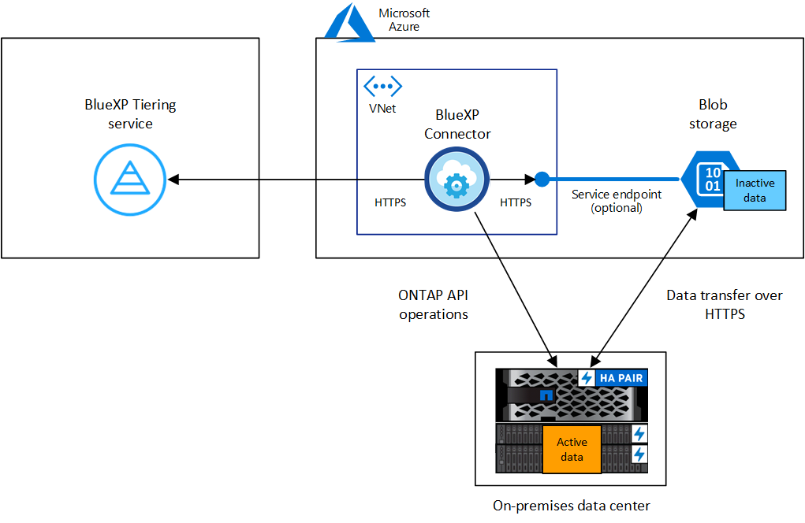
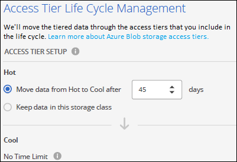
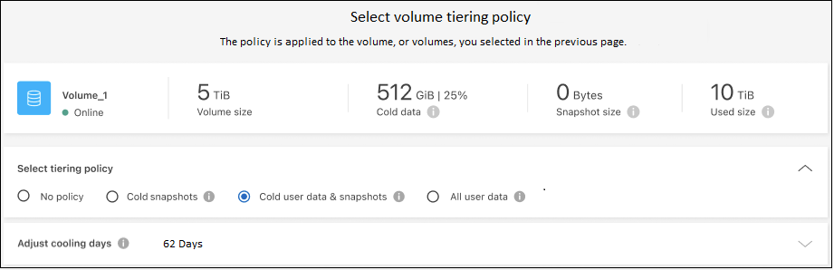

Get started
Get started
Tiering data from on-premises ONTAP clusters to Azure Blob storage
 Suggest changes
Suggest changes
Free space on your on-prem ONTAP clusters by tiering inactive data to Azure Blob storage.
Quick start
Get started quickly by following these steps, or scroll down to the remaining sections for full details.
 Prepare to tier data to Azure Blob storage
Prepare to tier data to Azure Blob storageYou need the following:
-
An on-prem ONTAP cluster that's running ONTAP 9.4 or later and has an HTTPS connection to Azure Blob storage. Learn how to discover a cluster.
-
A Connector installed in an Azure VNet or on your premises.
-
Networking for a Connector that enables an outbound HTTPS connection to the ONTAP cluster in your data center, to Azure storage, and to the BlueXP tiering service.
 Set up tiering
Set up tieringIn BlueXP, select an on-prem ONTAP working environment, click Enable for the Tiering service, and follow the prompts to tier data to Azure Blob storage.
 Set up licensing
Set up licensingAfter your free trial ends, pay for BlueXP tiering through a pay-as-you-go subscription, an ONTAP BlueXP tiering BYOL license, or a combination of both:
-
To subscribe from the Azure Marketplace, go to the BlueXP Marketplace offering, click Subscribe, and then follow the prompts.
-
To pay using a BlueXP tiering BYOL license, contact us if you need to purchase one, and then add it to your account from the BlueXP digital wallet.
Requirements
Verify support for your ONTAP cluster, set up your networking, and prepare your object storage.
The following image shows each component and the connections that you need to prepare between them:


|
Communication between the Connector and Blob storage is for object storage setup only. The Connector can reside on your premises, instead of in the cloud. |
Preparing your ONTAP clusters
Your ONTAP clusters must meet the following requirements when tiering data to Azure Blob storage.
- Supported ONTAP platforms
-
-
When using ONTAP 9.8 and later: You can tier data from AFF systems, or FAS systems with all-SSD aggregates or all-HDD aggregates.
-
When using ONTAP 9.7 and earlier: You can tier data from AFF systems, or FAS systems with all-SSD aggregates.
-
- Supported ONTAP version
-
ONTAP 9.4 or later
- Cluster networking requirements
-
-
The ONTAP cluster initiates an HTTPS connection over port 443 to Azure Blob storage.
ONTAP reads and writes data to and from object storage. The object storage never initiates, it just responds.
Although ExpressRoute provides better performance and lower data transfer charges, it's not required between the ONTAP cluster and Azure Blob storage. But doing so is the recommended best practice.
-
An inbound connection is required from the Connector, which can reside in an Azure VNet or on your premises.
A connection between the cluster and the BlueXP tiering service is not required.
-
An intercluster LIF is required on each ONTAP node that hosts the volumes you want to tier. The LIF must be associated with the IPspace that ONTAP should use to connect to object storage.
-
- Supported volumes and aggregates
-
The total number of volumes that BlueXP tiering can tier might be less than the number of volumes on your ONTAP system. That's because volumes can't be tiered from some aggregates. Refer to the ONTAP documentation for functionality or features not supported by FabricPool.
|
|
BlueXP tiering supports FlexGroup volumes, starting with ONTAP 9.5. Setup works the same as any other volume. |
Discovering an ONTAP cluster
You need to create an on-prem ONTAP working environment in BlueXP before you can start tiering cold data.
Creating or switching Connectors
A Connector is required to tier data to the cloud. When tiering data to Azure Blob storage, you can use a Connector that's in an Azure VNet or in your premises. You'll either need to create a new Connector or make sure that the currently selected Connector resides in Azure or on-prem.
Verify that you have the necessary Connector permissions
If you created the Connector using BlueXP version 3.9.25 or greater, then you're all set. The custom role that provides the permissions that a Connector needs to manage resources and processes within your Azure network will be set up by default. See the required custom role permissions and the specific permissions required for BlueXP tiering.
If you created the Connector using an earlier version of BlueXP, then you'll need to edit the permission list for the Azure account to add any missing permissions.
Preparing networking for the Connector
Ensure that the Connector has the required networking connections. A Connector can be installed on-prem or in Azure.
-
Ensure that the network where the Connector is installed enables the following connections:
-
An HTTPS connection over port 443 to the BlueXP tiering service and to your Azure Blob object storage (see the list of endpoints)
-
An HTTPS connection over port 443 to your ONTAP cluster management LIF
-
-
If needed, enable a VNet service endpoint to Azure storage.
A VNet service endpoint to Azure storage is recommended if you have an ExpressRoute or VPN connection from your ONTAP cluster to the VNet and you want communication between the Connector and Blob storage to stay in your virtual private network.
Preparing Azure Blob storage
When you set up tiering, you need to identify the resource group you want to use, and the storage account and Azure container that belong to the resource group. A storage account enables BlueXP tiering to authenticate and access the Blob container used for data tiering.
BlueXP tiering supports tiering to any storage account in any region that can be accessed via the Connector.
BlueXP tiering supports only the General Purpose v2 and Premium Block Blob types of storage accounts.
|
|
If you are planning to configure BlueXP tiering to use a lower cost access tier where your tiered data will transition to after a certain number of days, you must not select any lifecycle rules when setting up the container in your Azure account. BlueXP tiering manages the lifecycle transitions. |
Tiering inactive data from your first cluster to Azure Blob storage
After you prepare your Azure environment, start tiering inactive data from your first cluster.
-
Select the on-prem ONTAP working environment.
-
Click Enable for the Tiering service from the right panel.
If the Azure Blob tiering destination exists as a working environment on the Canvas, you can drag the cluster onto the Azure Blob working environment to initiate the setup wizard.

-
Define Object Storage Name: Enter a name for this object storage. It must be unique from any other object storage you may be using with aggregates on this cluster.
-
Select Provider: Select Microsoft Azure and click Continue.
-
Complete the steps on the Create Object Storage pages:
-
Resource Group: Select a resource group where an existing container is managed, or where you'd like to create a new container for tiered data, and click Continue.
When using an on-prem Connector, you must enter the Azure Subscription that provides access to the resource group.
-
Azure Container: Select the radio button to either add a new Blob container to a storage account or to use an existing container. Then select the storage account and choose the existing container, or enter the name for the new container. Then click Continue.
The storage accounts and containers that appear in this step belong to the resource group that you selected in the previous step.
-
Access Tier Lifecycle: BlueXP tiering manages the lifecycle transitions of your tiered data. Data starts in the Hot class, but you can create a rule to apply the Cool class to the data after a certain number of days.
Select the access tier that you want to transition the tiered data to and the number of days before the data is assigned to that tier, and click Continue. For example, the screenshot below shows that tiered data is assigned to the Cool class from the Hot class after 45 days in object storage.
If you choose Keep data in this access tier, then the data remains in the Hot access tier and no rules are applied. See supported access tiers.

Note that the lifecycle rule is applied to all blob containers in the selected storage account.
-
Cluster Network: Select the IPspace that ONTAP should use to connect to object storage, and click Continue.
Selecting the correct IPspace ensures that BlueXP tiering can set up a connection from ONTAP to your cloud provider's object storage.
You can also set the network bandwidth available to upload inactive data to object storage by defining the "Maximum transfer rate". Select the Limited radio button and enter the maximum bandwidth that can be used, or select Unlimited to indicate that there is no limit.
-
-
On the Tier Volumes page, select the volumes that you want to configure tiering for and launch the Tiering Policy page:
-
To select all volumes, check the box in the title row (
 ) and click Configure volumes.
) and click Configure volumes. -
To select multiple volumes, check the box for each volume (
 ) and click Configure volumes.
) and click Configure volumes. -
To select a single volume, click the row (or
 icon) for the volume.
icon) for the volume.
-
-
In the Tiering Policy dialog, select a tiering policy, optionally adjust the cooling days for the selected volumes, and click Apply.

You've successfully set up data tiering from volumes on the cluster to Azure Blob object storage.
You can review information about the active and inactive data on the cluster. Learn more about managing your tiering settings.
You can also create additional object storage in cases where you may want to tier data from certain aggregates on a cluster to different object stores. Or if you plan to use FabricPool Mirroring where your tiered data is replicated to an additional object store. Learn more about managing object stores.